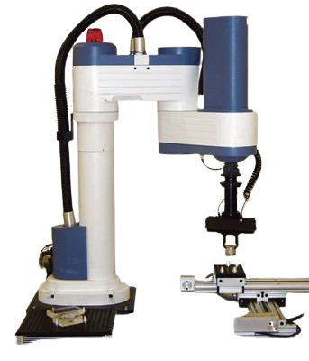

SCORA ER-14 ROBOT
The SCORA ER-14 is a versatile 4-axis robotic arm, designed for education and research in robotics and automation. Known for its precision and reliability, it’s perfect for tasks like picking, placing, and simulating industrial processes. Ideal for teaching concepts like forward and inverse kinematics, it’s a must-have tool for anyone exploring the world of robotics.
